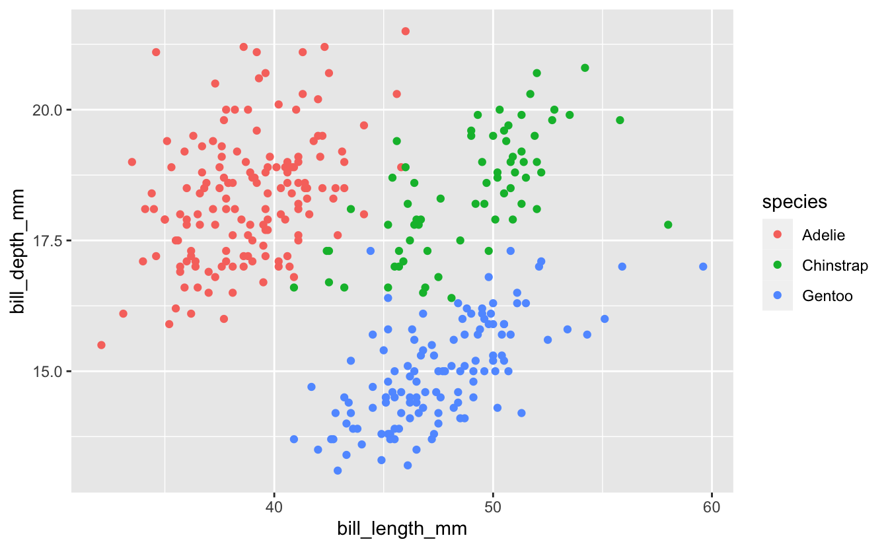
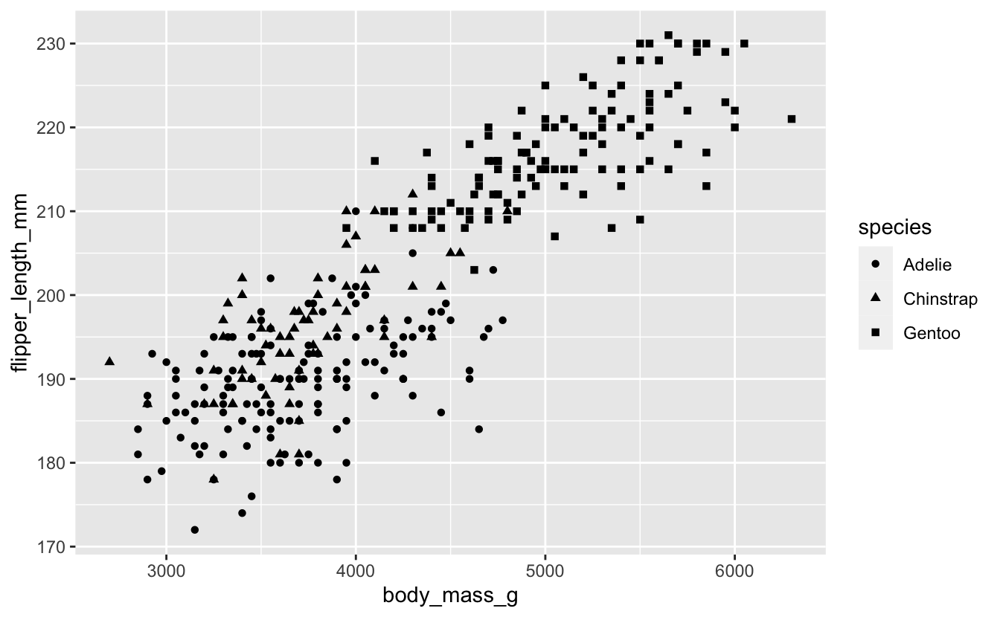
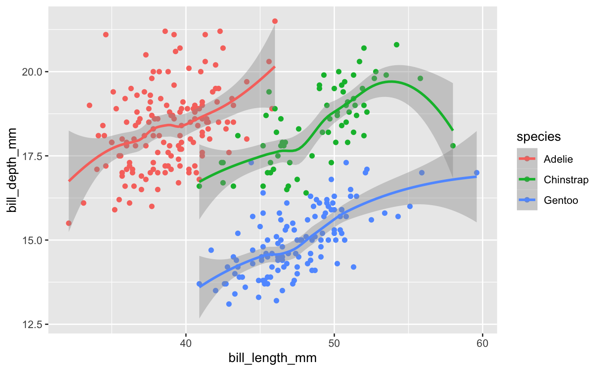
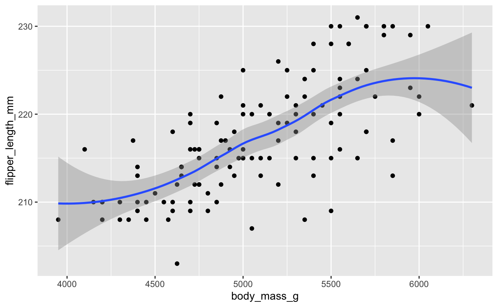

Code Club S02E06: Visualizing Data
Introduction to data visualization with ggplot2
 Image from Allison Horst’s Twitter
Image from Allison Horst’s Twitter
New To Code Club?
-
First, check out the Code Club Computer Setup instructions, which also has some pointers that might be helpful if you’re new to R or RStudio.
-
Please open RStudio before Code Club to test things out – if you run into issues, join the Zoom call early and we’ll troubleshoot.
Session Goals
- Learn the philosophy of coding a graphic.
- Learn the basic template of a ggplot graphic, so you can reuse it for multiple chart types.
- Learn how you can quickly add visual information to a graphic using aesthetics and layers.
Intro: The ggplot philosophy
We have seen that in R, instead of manually manipulating data frames with a mouse as you do when editing Excel spreadsheets, we code the operations we want to perform using dplyr verbs like select(), filter(), arrange(), and so on.
In a similar way when performing visualization, instead of clicking on a chart type in Excel and selecting options, we code the chart in R.
And just as dplyr gives us efficient ways to manipulate data frames, ggplot2 (which is also part of the tidyverse) gives us efficient ways to manipulate charts/plots/graphics (we use these terms interchangeably).
The gg in ggplot2 stands for grammar of graphics, a systematic approach for designing statistical plots developed by Leland Wilkinson. The idea behind this is to think about ‘pulling apart’ various plots into their component pieces, then provide code that could put those pieces together again in different ways to make new plots.
This notion of pulling apart a graphic leads to the idea of layers. You can build up a plot of any complexity by overlaying different views of the same data.
There’s a learning curve here for sure, but there are many advantages.
- First, every graphic shares a common template. Once you understand this structure you can “say” a lot of different things.
(And I mean a lot. The ggplot cheat sheet lists over 40 plot-types, but because this is a language in its own right, users can create their own extensions that you can also utilize, adding over 80 more.) - Second, because the graphic is now a piece of code, it is reusable. Once you have a little library of graphs you’ve made, you can tweak them in various ways to make more. You can also share your code with others, so they can apply the same approach to their data.
- Third, the way we put layers together is identical to the way we use pipes. You can read
%>%as and then: “select()and thenfilter()and thenmutate()”. In graphics, the “and then” symbol is+: “show this layer, and then add this layer, and then add this layer”. In this way you can gradually build up a graphic of increasing complexity; or on the other hand take someone else’s code and simplify it by deleting layers.
A First Example
So how does this work in practice? We’ll work through visualizing aspects of the palmerpenguins package which was introduced in S02E04 Intro to the Tidyverse.
In addition, ggplot2 is part of the tidyverse package so we need to load that as well:
# this assumes you've already installed tidyverse and palmerpenguins with install.packages()
library(tidyverse)
library(palmerpenguins)And recall that the penguins dataset is included in that package:
glimpse(penguins)
#> Rows: 344
#> Columns: 8
#> $ species <fct> Adelie, Adelie, Adelie, Adelie, Adelie, Adelie, Adel…
#> $ island <fct> Torgersen, Torgersen, Torgersen, Torgersen, Torgerse…
#> $ bill_length_mm <dbl> 39.1, 39.5, 40.3, NA, 36.7, 39.3, 38.9, 39.2, 34.1, …
#> $ bill_depth_mm <dbl> 18.7, 17.4, 18.0, NA, 19.3, 20.6, 17.8, 19.6, 18.1, …
#> $ flipper_length_mm <int> 181, 186, 195, NA, 193, 190, 181, 195, 193, 190, 186…
#> $ body_mass_g <int> 3750, 3800, 3250, NA, 3450, 3650, 3625, 4675, 3475, …
#> $ sex <fct> male, female, female, NA, female, male, female, male…
#> $ year <int> 2007, 2007, 2007, 2007, 2007, 2007, 2007, 2007, 2007…What is the correlation between bill-length and bill-width in these species?

Are longer bills also deeper? We can explore this with a scatterplot.
But first let’s look at the ggplot() template.
Note: the package is ggplot2, the command is just
ggplot().
ggplot(data = <DATA>) +
<GEOM_FUNCTION>(mapping = aes(<MAPPINGS>))
These are the obligatory parts of any plot: data, geoms, and mappings. The first argument to ggplot() is the data frame:
ggplot(data = penguins)

This is not very interesting! but it’s notable that it is something. ggplot() has created a base coordinate system (a base layer) that we can add visual layers to. It’s completely uninfomative because we haven’t said how we want the data (or even which data) to be mapped to graphic elements.
The add a layer operator is “+”, which is the ggplot equivalent of the pipe symbol, and best practice is to place it at the end of the line, just like the pipe. This makes your layers more readable in the code (and can lead to problems if you put it some other places).
The next argument specifies the kind plot we want: scatterplot, bar chart, fitted line, boxplot, violin plot, etc, etc. ggplot2 refers to these as geoms: each different plot-type uses a different geometrical object to represent data.
You can see an overview of many of these geoms in the cheat sheet.The geom for a scatterplot is geom_point().
But we also require a mapping argument, which maps the variables or columns in the dataset we want to focus on to their visual representation in the plot.
And finally we need to specify aesthetics for the geometric objects in the plot, which will control things like shape, color, transparency, etc. Perhaps surprisingly, the x and y coordinates of the points are aesthetics, since these control, not the shape or color, but the relative position of the points in the plot. (After all, flipping the x for y in some plots will flip the plot 90 degrees.)
Sounds like a lot when you spell it all out, but it’s actually pretty simple in practice. Here then is our complete first plot:
ggplot(data = penguins) +
geom_point(mapping = aes(x = bill_length_mm, y = bill_depth_mm))

Hmmm… the relationship is not very clear, but I guess if you squint your eyes you can maybe see some local positive correlations? We’ll explore this relationship in more detail below using extra aesthetics.
But let’s get coding!
Exercise 1
Create a scatterplot comparing body mass and flipper length. Does it look like there is any correlation?
Hints (click here)
Check the output of the glimpse() function to see what the precise variable names for body mass and flipper length are. It's up to you which you assign to x and y.
Solution (click here)
ggplot(data = penguins) +
geom_point(mapping = aes(x = body_mass_g, y = flipper_length_mm))

The power of aesthetics
We saw above that the relationship between bill length and bill depth is not particularly clear; but that there might be some local patterns. How can we explore this? Is it possible that these clusters correspond somehow to the three different species: Adelie, Chinstrap, and Gentoo? Part of the problem with our original plot may be that we are lumping all the data from all three species together. We can quickly explore this by adding an extra aesthetic.
Our current plot uses two numeric variables: bill_length_mm and bill_depth_mm. We can add a third categorical variable, like species, to a two dimensional scatterplot by mapping it to a different visual aesthetic. We’ve mapped length and depth to x,y coordinates. Now we’ll simultaneously map species to color by expanding our list of aesthetics.
But before we do that, let’s improve our plotting commands a little.
First, our template includes a general mapping = directive, which in turn includes a bunch of specific mappings from variables to aesthetics. While I think it’s quite useful to be explicit that this is a mapping component (which connects columns with graphical objects) it turns out we can drop the mapping = syntax completely (and many people do). The very fact we have specific mappings inside aes() makes the mapping = redundant. (I’ve come to think of it as ‘syntactic sugar’).
Second, we can actually pipe the dataset into the ggplot() command! We then set the mappings, and then choose our geom in a new layer. This is very common. Our new syntax looks like this:
penguins %>%
ggplot(aes(x = bill_length_mm, y = bill_depth_mm)) +
geom_point()

Now let’s add an extra aesthetic for the species variable. For this example we’ll use the color aesthetic:
penguins %>%
ggplot(aes(x = bill_length_mm, y = bill_depth_mm, color = species)) +
geom_point()

We get a neat legend on the right hand side for free. It’s much clearer now that, within each species, there does seem to be a positive correlation between length and depth. It’s just that the absolute values for each species fall in different regions of “bill space”.
Notice: We are piping the entire raw dataset into the plot here, while only graphing part of it. The elegance of the pipe syntax is that we can first pass the dataset through a series of
dplyroperations - filtering and mutating etc. - and then pipe that modified dataset directly into our plotting commands. We’ll see more of that in coming Code Clubs (and Exercise 3)!
Exercise 2
Go back to your body_mass/flipper data and color by species, also using our new syntax.
There are various aesthetics you can use for a categorical variable (see help for geom_point). One is shape. Try this instead of color and see which you prefer.
Solutions (click here)
penguins %>%
ggplot(aes(x = body_mass_g, y = flipper_length_mm, color = species)) +
geom_point()

penguins %>%
ggplot(aes(x = body_mass_g, y = flipper_length_mm, shape = species)) +
geom_point()

The fitted-line geom: geom_smooth()
In the scatterplot for bill length vs. bill depth, there wasn’t a very clean overall positive relationship. We can make this even more apparent visually by fitting a line to the data: overlaying another geom in the same plot.
penguins %>%
ggplot(mapping = aes(x = bill_length_mm, y = bill_depth_mm)) +
geom_point() +
geom_smooth()
#> `geom_smooth()` using method = 'loess' and formula 'y ~ x'

Technical note: by default, the
geom_smooth()function doesn’t use classical linear regression to fit the data. Instead it uses locally estimated scatterplot smoothing: loess. This snakes around and tries to find a more local best fit to the data. You can request different fit algorithms with themethodoption. See help forgeom_smoothfor details.
But again, this is messy since we are trying to analyze all the data at once. What if we set the species aesthetic before we apply any geom, so that the aesthetic is inherited by both geoms?
penguins %>%
ggplot(aes(x = bill_length_mm, y = bill_depth_mm, color = species)) +
geom_point() +
geom_smooth()
#> `geom_smooth()` using method = 'loess' and formula 'y ~ x'

Here we can see there does seem to be a strong positive correlation if we analyze the data species-by-species.
Exercise 3
Revisit your flipper/body_mass data, and fit lines to each species.
There is a lot of overlap between two of the species in the scatterplot, which makes it hard to see the overall patterns for those two species. Does the fitted line overlay help make sense of this?
Solution (click here)
penguins %>%
ggplot(aes(x = body_mass_g, y = flipper_length_mm, color = species)) +
geom_point() +
geom_smooth()
#> `geom_smooth()` using method = 'loess' and formula 'y ~ x'

Perhaps you think this plot is too noisy, with the scatterplot data messing up the basic linear relationships. Modify your plot so it just shows the linear layer without the scatterplot layer.
Hints (click here)
Remember you can delete layers just as easily as you can add layers.
Solution (click here)
penguins %>%
ggplot(aes(x = body_mass_g, y = flipper_length_mm, color = species)) +
geom_smooth()
#> `geom_smooth()` using method = 'loess' and formula 'y ~ x'

(Bonus: if you have time…)
Pipe your dataset into a dplyr filter() command which pulls out just the Gentoo data; then pipe that data into the ggplot() command, to create a scatterplot, together with a smoothed-line overlay, for just that one species.
Hints (click here)
Remember two important things about the filter() function: (i) the check for equality is a double equals sign == (ii) the species name is a character string, not a number, so has to be quoted with "...".
Solution (click here)
penguins %>%
filter(species == "Gentoo") %>%
ggplot(aes(x = body_mass_g, y = flipper_length_mm)) +
geom_point() +
geom_smooth()
#> `geom_smooth()` using method = 'loess' and formula 'y ~ x'
